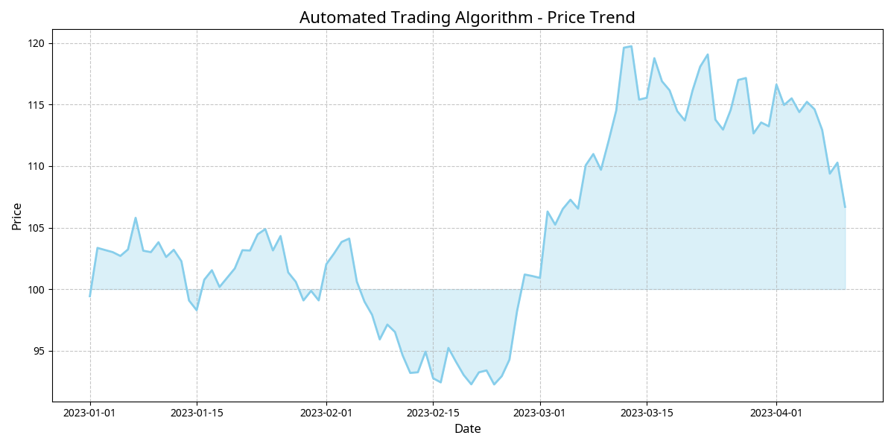
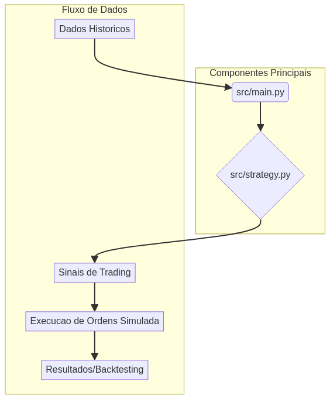

Visão Geral
Este repositório apresenta um algoritmo de trading automatizado desenvolvido em Python, projetado para analisar dados de mercado e executar operações de compra e venda de forma autônoma. O projeto foca em estratégias baseadas em indicadores técnicos e aprendizado de máquina para otimizar o desempenho.
 Funcionalidades
- Análise de dados de mercado em tempo real (simulado)
- Implementação de estratégias de trading (ex: médias móveis, RSI)
- Backtesting robusto para avaliação de desempenho
- Geração de sinais de compra/venda
- Módulos de visualização de dados
Instalação
Para começar com o algoritmo, siga os passos abaixo:
git clone https://github.com/galafis/automated-trading-algorithm-python.git
cd automated-trading-algorithm-python
pip install -r requirements.txtUso
Execute o script principal para iniciar o algoritmo:
python src/main.pyPara exemplos de uso e notebooks de análise, consulte a pasta notebooks/.
Documentação
A documentação completa do projeto, incluindo detalhes sobre as estratégias implementadas e a arquitetura do código, pode ser encontrada na pasta docs/.